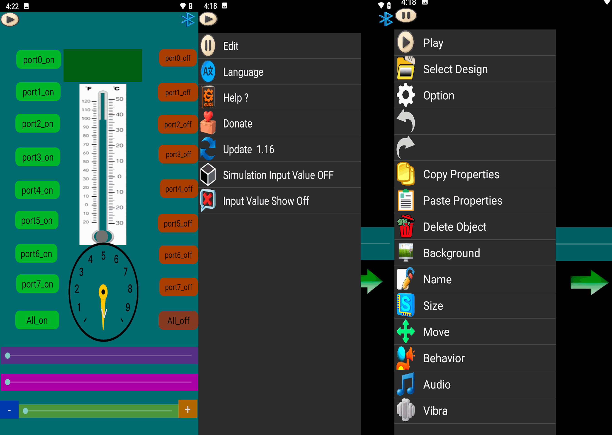

README
The developer: Saeid Moghadam
Supported Languages in SoifGo
- English (EN)
- Spanish (Español)
- Chinese (简体中文)
- French (Français)
- German (Deutsch)
- Japanese (日本語)
- Russian (Русский)
- Arabic (العربية)
- Persian (فارسی)
- Italian (Italiano)
- Hindi (हिन्दी)
- Turkish (Türkçe)
- Korean (한국어)
- Portuguese (Português)
- Hebrew (עברית)
- Kurdish (کوردی)
- Urdu (اردو)
- Bengali (বাংলা)
- Indonesian (Bahasa Indonesia)
- Tamil (தமிழ்)
- Thai (ไทย)
- Swahili (Kiswahili)
About SoifGo
SoifGo is an Android application that provides users with advanced capabilities using buttons and seek bars.
About the Developer
Saeid Moghadam is a documentation perfectionist and user-focused developer.
Email: SSMQQMSS@gmail.com
